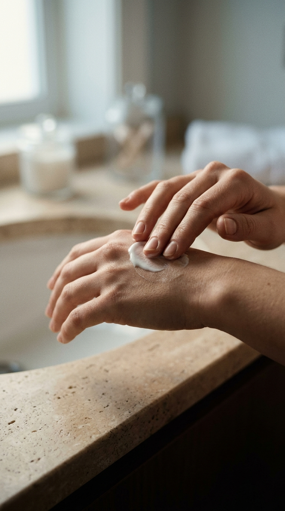

Alina T.
Karbe
Über mich
Neugier treibt mich an, besonders wenn aus einer Idee etwas wird, das Menschen erreicht. Als Coiffeuse habe ich gelernt, gut zuzuhören und herauszufinden, was jemand wirklich braucht. Beim Impact Hub Zürich habe ich erlebt, wie aus einzelnen Beiträgen eine Kampagne für eine ganze Veranstaltung wird. Heute entwickle ich bei TINGS Konzepte für Social Media, plane Drehs und schneide Videos, und für manche Formate stehe ich selbst vor der Kamera. Am liebsten begleite ich ein Projekt von der ersten Idee bis zum fertigen Beitrag, weil ich dabei kreativ denken und direkt ausprobieren kann, was funktioniert.
TINGS
Black Friday Ads für JUNA
Für JUNA habe ich bei TINGS die Black Friday Ads von der ersten Idee bis zum fertigen Schnitt begleitet.
Mein Beitrag
- Konzept
- Idee und Aufbau der Ads entwickelt.
- Drehplanung
- Den Dreh vorbereitet und organisiert.
- Creative Direction
- Look und Umsetzung am Set geführt.
- Schnitt
- Die Ads geschnitten und fertiggestellt.
Impact Hub Zürich
Open Hub Day
Für den Open Hub Day beim Impact Hub Zürich habe ich die Kampagne mitgeplant, Texte geschrieben und Inhalte gestaltet.
12
Social Media Posts
Umfang der Kampagne
450
Anmeldungen
Ergebnis des Events
Mein Beitrag
- Kampagnenplanung
- Copywriting
- Design
Kanäle
Instagram, LinkedIn, Newsletter, Print
Vor der Kamera
Für manche Formate stehe ich selbst vor der Kamera.
UGC für Marken
Inhalte, die ich für Marken erstellt habe.
